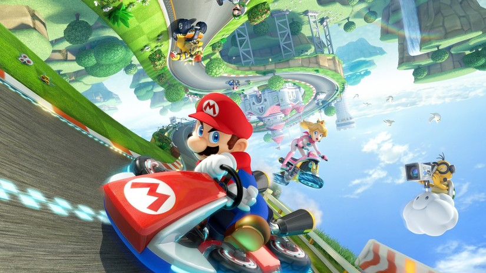

Model MDA
El model MDA és una metodologia que es basa en descompondre un videojoc en tres elements diferenciats: Mecànica, Dinàmica i Estètica.
Mecànica
Les Mecàniques són les normes, regles i elements objectius del joc. Defineixen les accions que es poden realitzar i les condicions del joc.
Dinàmica
La Dinàmica és el comportament del joc en acció, és a dir, com es desenvolupen les mecàniques en el transcurs del joc i com interaccionen amb el jugador.
Estètica
L'Estètica és la sensació o experiència que queda al jugador després de jugar. Inclou aspectes com la narrativa, el desafiament, la descoberta i altres sensacions desitjables.
Elements de Videojoc
Els Elements de Videojoc són els components que defineixen i influeixen en l'experiència del jugador en un videojoc.
Abstracció de Conceptes i Realitat
L'Abstracció és la capacitat del joc per representar conceptes i situacions de la realitat de manera simplificada i comprensible pel jugador.

Conflicte, Competició o Cooperació
El Conflicte és la situació de desacord entre forces o personatges del joc. La Competició és la lluita entre jugadors pel domini o la victòria. La Cooperació és la col·laboració entre jugadors per aconseguir un objectiu comú.
Corba d'Interès
La Corba d'Interès és la progressió de l'interès i l'emoció del jugador al llarg del joc. Generalment, comença amb una introducció tranquil·la, augmenta amb el conflicte i arriba al clímax amb la resolució.
El Viatge de l'Heroi
El Viatge de l'Heroi és un patró narratiu comú en els videojocs en què el jugador assumeix el paper d'un heroi que ha de superar reptes i obstacles per aconseguir un objectiu.
Estètica (element de joc)
L'Estètica és la sensació o experiència que queda al jugador després de jugar. Inclou aspectes com la narrativa, el desafiament, la descoberta i altres sensacions desitjables.
Metes (Objectius)
Les Metes són els objectius que el jugador ha de complir per avançar en el joc. Poden ser objectius a curt termini, com ara superar un nivell, o a llarg termini, com ara completar el joc.
Narrativa
La Narrativa és la història del joc, incloent-hi els personatges, els esdeveniments i els diàlegs. Una bona narrativa pot enriquir l'experiència del jugador.
Nivell (Grau de Dificultat)
El Nivell és el grau de dificultat del joc. Pot ser ajustat per proporcionar un repte adequat al jugador, o per adaptar-se a les seves habilitats.
Nivell de Joc
El Nivell de Joc és la progressió del jugador en el joc. Pot ser mesurat en punts, nivells o altres indicadors de progrés.
Nivell del Jugador
El Nivell del Jugador és la capacitat i l'experiència del jugador en el joc. Pot ser mesurat en punts, nivells o altres indicadors de progrés.
Nivells
Els Nivells són les àrees o etapes del joc. Poden ser dissenyats per proporcionar una varietat d'experiències i reptes al jugador.
Recompensa
La Recompensa és el premi que el jugador rep per complir un objectiu o superar un repte. Pot ser en forma de punts, objectes o habilitats.
Regles
Les Regles són les normes i condicions del joc. Defineixen les accions que es poden realitzar i les condicions del joc.
Retroacció
La Retroacció és la resposta del joc a les accions del jugador. Pot ser en forma de recompenses, punts o canvis en l'entorn del joc.

Temps
El Temps és un element important en molts videojocs. Pot ser utilitzat per crear pressió, establir objectius temporals o proporcionar una sensació de progrés.
Torna-ho a intentar
El Torna-ho a intentar és la capacitat del jugador per provar de nou després d'una derrota. Pot ser en forma de vides, punts o altres recursos.